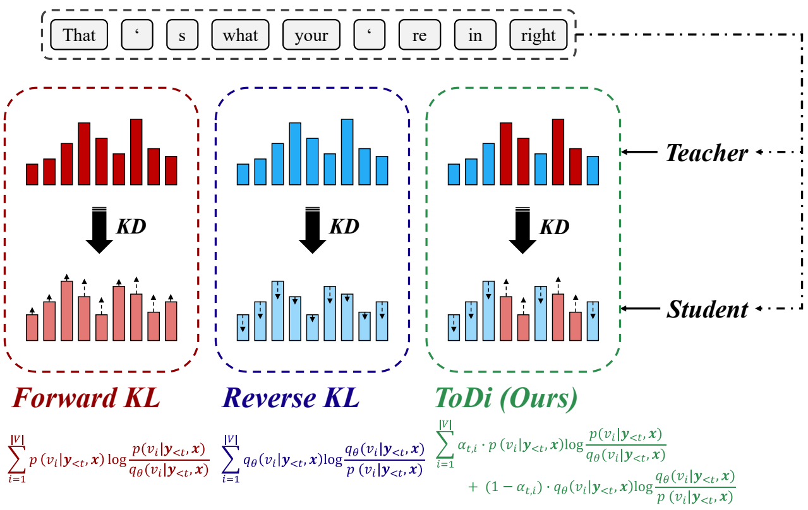

|
Seongryong Jung I am an undergraduate student in the Department of Artificial Intelligence at Chung-Ang University, Seoul, Korea. I have had research experience at Trillion Labs and DMT Labs, where both experiences centered on training models with awareness of their current state of knowledge, through continual learning across multiple domains at Trillion Labs and knowledge distillation at DMT Labs. My long-term goal is to build self-evolving AI systems that can autonomously and continuously improve themselves. I am particularly drawn to post-training methods that adapt to a model's current state, as a stepping stone toward AI that can guide and improve its own learning. |
News
|
Publications |
|
 |
ToDi: Token-wise Distillation via Fine-Grained Divergence Control
Seongryong Jung, Suwan Yoon, DongGeon Kim, Hwanhee Lee Proceedings of the 2025 Conference on Empirical Methods in Natural Language Processing (EMNLP 2025) Oral Presentation / Outstanding Paper Award Finalist (top 0.9%) project / paper / arXiv / code / cited by 10 / bibtex |
Experiences
Trillion Labs
Mar. 2026 – Jun. 2026
Seoul, Korea
DMT Labs
Mar. 2025 – Jun. 2025
Seoul, Korea
Education
Chung-Ang University
Mar. 2023 – Present
Seoul, Korea
Tokyo Metropolitan University
Oct. 2025 – Mar. 2026
Tokyo, Japan
Awards & Honors
Trajectory |